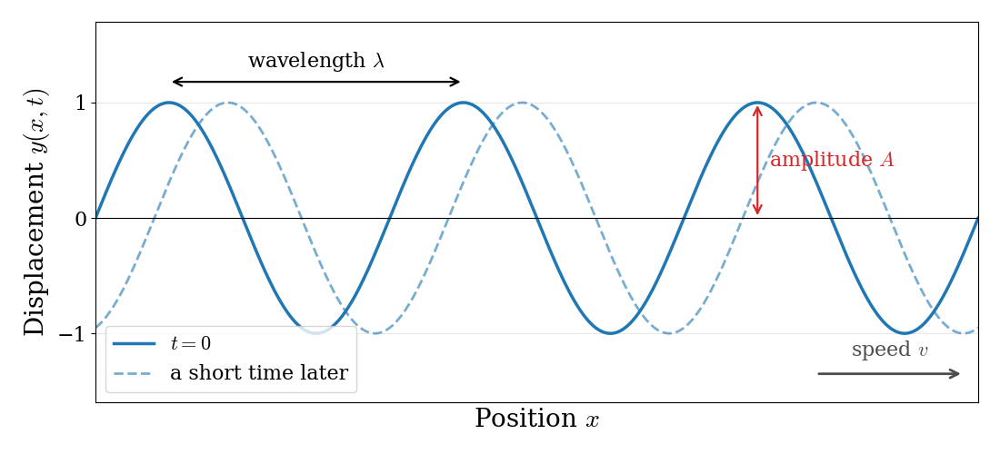
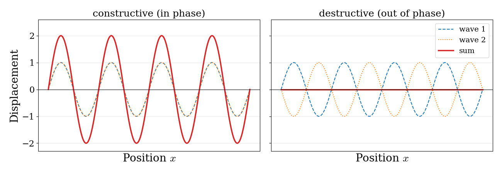
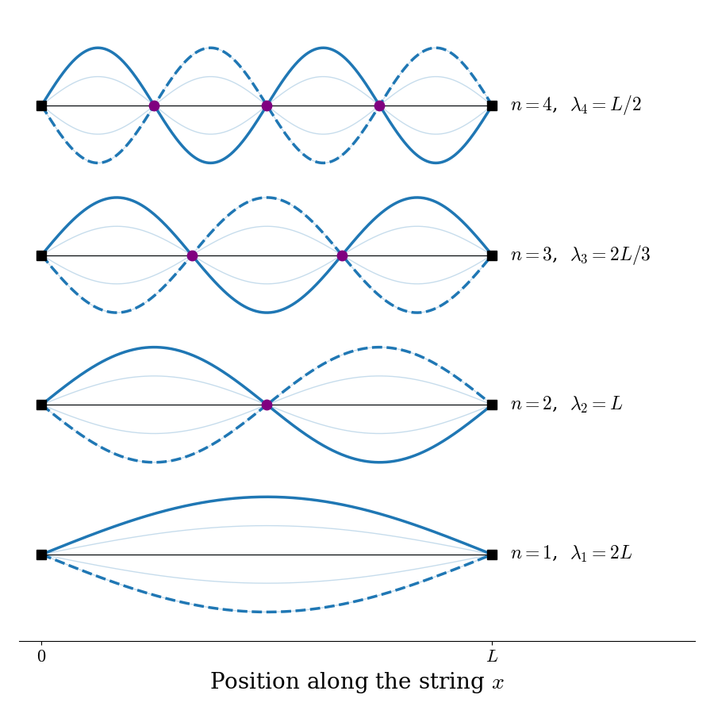

1 Brief Summary of Classical Physics
Quantum mechanics cannot be derived from classical physics, but it was built by physicists who knew classical physics very well, and many of its ideas and equations are borrowed from it. Before discussing, in the next chapter, the experiments that classical physics could not explain, we will review the classical concepts that we will need the most: the description of motion through forces and through energy, the electrostatic interaction between charged particles, and the physics of waves.
1.1 Classical Mechanics
1.1.1 Newtonian Formulation
Classical mechanics as formulated by Isaac Newton (1643–1727) is all about forces. Newtonian mechanics works well for problems where we know the forces and have a reasonable coordinate system. In these cases, the net force acting on a system at position \(\mathbf{r}\) in Cartesian 3-dimensional space \(\left\{ x,y,z \right\}\) is simply:
\[\begin{equation} F_{\mathrm{net}}(\mathbf{r}) = m\ddot{\mathbf{r}} = m \frac{d^2 \mathbf{r}}{dt^2}. \tag{1.1} \end{equation}\]
Or, in other words, if we know the net force acting on a system of mass \(m\) at position \(\mathbf{r}\) at some time \(t_0\), we can use eq. (1.1) to calculate the position of the system at any future (or past) time. We have completely determined the dynamical evolution of the system.1
Example 1.1 A ball of mass \(m\) is at ground level and tossed straight up from an initial position \(x_0\) with an initial velocity \(\dot{x}_0\) and subject to gravity alone. Calculate the equation of motion for the ball (i.e. where is the ball going to be after some time \(t\)?).2
Solution: Since the only force acting on the ball is gravity, we can use the equation for the gravitational force to start our derivation:
\[\begin{equation} F_{\mathrm{gravity}}=-mg, \end{equation}\]
with \(g\) the gravitational acceleration (\(g=9.8\; \mathrm{m}/\mathrm{s}^{2}\)). We can then replace this expression into eq. (1.1), to obtain:
\[\begin{equation} \begin{aligned} -mg &=m \ddot{\mathbf{r}} \\ -g &=\ddot{\mathbf{r}} \\ -g &=\frac{d\dot{\mathbf{r}}}{dt}. \\ \end{aligned} \end{equation}\]
Working in a 1-dimensional case, we can replace \(\mathbf{r}\) with position \(x\) to obtain:
\[\begin{equation} \begin{aligned} -mg &=m \ddot{x} \\ -g &=\ddot{x} \\ -g &=\frac{d\dot{x}}{dt}. \\ \end{aligned} \end{equation}\]
which can then be integrated with respect to time, to obtain:
\[\begin{equation} \begin{aligned} -g\int_{t=0}^{t} dt &=\int_{\dot{x}_0}^{\dot{x}} d\dot{x}\\ \dot{x} &= \dot{x}_0-gt\\ \frac{dx}{dt} &= \dot{x}_0-gt,\\ \end{aligned} \end{equation}\]
which can be further integrated with respect to time, to give:
\[\begin{equation} \begin{aligned} \int_{x_0}^{x} dx &= \int_{t=0}^{t} \dot{x}_0 dt -g \int_{t=0}^{t}tdt\\ x &= x_0 + \dot{x}_0 t -\frac{1}{2}gt^2. \end{aligned} \end{equation}\]
This final equation is the equation of motion for the ball, from which we can calculate the position of the ball at any time \(t\). Notice how the equation of motion does not depend on the mass of the ball!
Numerical problem: How much time will a ball ejected from a height of \(1 \;\mathrm{m}\) at an initial velocity of \(10 \;\mathrm{m/s}\) take to hit the floor?
We can use the equation of motion obtained above to solve this problem, and obtain for this specific case \(t\simeq2.14\;\mathrm{s}\).3
Newton’s equation is not the only way of writing the laws of classical mechanics. Physicists have developed other, equivalent formulations, which give exactly the same results but are more convenient for some problems. The most famous are the Lagrangian formulation, based on the difference between the kinetic and the potential energy of a system, and the Hamiltonian formulation, based on their sum.4 Only the second one will be important for us, because it is the one that quantum mechanics is built upon.
1.1.2 Hamiltonian Formulation
Newton’s mechanics is built around forces. Hamiltonian mechanics, instead, is built around energy. Its goal is to describe the motion of a system starting from a single function, the total energy, written in terms of where the particle is and how much momentum it has. This is exactly the starting point that we will use in quantum mechanics, which is why we need to get familiar with it now.
The first ingredient is the momentum of a particle of mass \(m\) moving with velocity \(\dot{x}\) (we will work in one dimension to keep things simple):
\[\begin{equation} p = m\dot{x}. \tag{1.2} \end{equation}\]
Momentum carries the same information as velocity, but, as we will see in the next chapter, it is the quantity that appears naturally when we describe particles in quantum mechanics.
The second ingredient is the total energy of the system, which is the sum of the kinetic energy, \(K\), and the potential energy, \(V\):
\[\begin{equation} H = K + V. \tag{1.3} \end{equation}\]
When we write this total energy as a function of the position, \(x\), and the momentum, \(p\), we call it the Hamiltonian of the system, and we use the symbol \(H\). Since the kinetic energy is \(K=\frac{1}{2}m\dot{x}^2\), and \(\dot{x}=p/m\), we can write \(K=\frac{p^2}{2m}\), and the Hamiltonian of a particle becomes:
\[\begin{equation} H(x,p) = \frac{p^2}{2m} + V(x). \tag{1.4} \end{equation}\]
This equation is the most important result of this section. The first term depends only on the momentum, and it is the same for every system. The second term depends only on the position, and it is what makes each system different: a ball in the gravitational field of the Earth, an electron attracted by a nucleus, or two atoms connected by a chemical bond differ only in their potential energy, \(V(x)\).
Once we know the Hamiltonian, the motion of the system can be obtained from two simple equations, called Hamilton’s equations:
\[\begin{equation} \begin{aligned} \dot{x}=\frac{dx}{dt} &= +\frac{\partial H}{\partial p}, \\ \dot{p}=\frac{dp}{dt} &= -\frac{\partial H}{\partial x}. \end{aligned} \tag{1.5} \end{equation}\]
These two equations are less mysterious than they look. If we apply them to eq. (1.4), the first one gives \(\dot{x}=\frac{p}{m}\), which is just the definition of momentum, eq. (1.2), read backwards. The second one gives \(\dot{p}=-\frac{dV}{dx}\). Since \(\dot{p}=m\ddot{x}\), and since minus the derivative of the potential energy is the force, \(F=-\frac{dV}{dx}\), this is just Newton’s equation, \(F=m\ddot{x}\), written in a different form. Hamilton’s equations, in other words, contain no new physics: they are a different way of organizing the same information, starting from the energy instead of the forces.
Example 1.2 Let’s apply the Hamiltonian formulation to the same problem as in the previous example: a ball of mass \(m\) tossed straight up and subject only to gravity.
The potential energy of the ball at height \(x\) is \(V(x)=mgx\), so the Hamiltonian, eq. (1.4), is:
\[\begin{equation} H=\frac{p^2}{2m}+mgx. \tag{1.6} \end{equation}\]
Hamilton’s equations, eq. (1.5), give:
\[\begin{equation} \begin{aligned} \dot{x} &= \frac{\partial H}{\partial p} = \frac{p}{m}, \\ \dot{p} &=-\frac{\partial H}{\partial x} = -mg. \end{aligned} \end{equation}\]
The second equation tells us that the momentum of the ball decreases at a constant rate, \(p(t)=p_0-mgt\), where \(p_0=m\dot{x}_0\) is the initial momentum. Replacing it in the first equation, we obtain \(\dot{x}=\dot{x}_0-gt\), and integrating once more we obtain the same equation of motion that we found with Newton’s method:
\[\begin{equation} x = x_0 + \dot{x}_0 t -\frac{1}{2}gt^2. \end{equation}\]
So, if the Hamiltonian gives the same answers as Newton’s equation, why do we bother? There are two reasons, both important for what follows:
The Hamiltonian is the total energy, and the total energy is conserved. We can check this for the ball in the previous example: replacing \(p(t)\) and \(x(t)\) in eq. (1.6), all the terms that depend on time cancel out, and \(H=\frac{p_0^2}{2m}+mgx_0\) at all times. As the ball rises, kinetic energy is converted into potential energy and vice versa, but their sum, \(H\), never changes. Energy, and not force, is the central quantity in chemistry, and the energy levels of atoms and molecules are what we measure in experiments.
The Hamiltonian is the bridge to quantum mechanics. In quantum mechanics we will not be able to talk about the trajectory of a particle, so Newton’s equation will be of little use. The Hamiltonian, on the other hand, will survive almost unchanged. In chapter 6, we will see that the central equation of quantum mechanics, the Schrödinger equation, is obtained by taking eq. (1.4) and replacing the momentum, \(p\), with a mathematical operation (a derivative) acting on a wave function.
1.2 Coulomb’s Law
Coulomb’s Law states that the magnitude of the electrostatic force of attraction or repulsion between two point charges is directly proportional to the product of the magnitudes of charges and inversely proportional to the square of the distance between them:
\[\begin{equation} |\mathbf{F}| = k_e \frac{|q_1q_2|}{r^2} = \frac{1}{4\pi\varepsilon_0}\frac{|q_1q_2|}{r^{2}}. \tag{1.7} \end{equation}\]
The constant \(k_e\) is called the Coulomb constant and is equal to \({1}/{4\pi\varepsilon_0}\), where \(\varepsilon_0\) is the vacuum permittivity constant; \(k_e \simeq 8.988\times10^9\;\mathrm{Nm^2C^{-2}}\). If the product \(q_1q_2\) is positive, the force between the two charges is repulsive; if the product is negative, the force between them is attractive.
1.2.1 Vector Form of Coulomb’s Law
Coulomb’s law in vector form states that the electrostatic force \({\textstyle \mathbf {F}_{1}}\) experienced by a charge, \(q_{1}\) at position \(\mathbf {r}_{1}\), in the vicinity of another charge, \(q_{2}\) at position \(\mathbf {r}_{2}\), in a vacuum is equal \[\begin{equation} {\displaystyle \mathbf{F}_{1}={\frac {q_{1}q_{2}}{4\pi \varepsilon _{0}}}{\frac {\mathbf{r}_{1}-\mathbf{r}_{2}}{|\mathbf {r}_{1}-\mathbf{r}_{2}|^{3}}}={\frac {q_{1}q_{2}}{4\pi \varepsilon_{0}}}{\frac{\mathbf{\hat{r}} _{12}}{|\mathbf {r} _{12}|^{2}}}}, \tag{1.8} \end{equation}\]
where \({\textstyle {\boldsymbol {r}}_{12}={\boldsymbol {r}}_{1}-{\boldsymbol {r}}_{2}}\) is the vectorial distance between the charges, \({\textstyle {\widehat {\mathbf {r} }}_{12}={\frac {\mathbf {r} _{12}}{|\mathbf {r} _{12}|}}}\) a unit vector pointing from \({\textstyle q_{2}}\) to \({\textstyle q_{1}}\), and \(\varepsilon_{0}\) the vacuum permittivity constant. Here, \({\textstyle \mathbf {\hat {r}} _{12}}\) is used for the vector notation.
The vector form of Coulomb’s law is simply the scalar definition of the law with the direction given by the unit vector, \({\textstyle {\widehat {\mathbf {r} }}_{12}}\), parallel with the line from charge \(q_{2}\) to charge \(q_{1}\). If both charges have the same sign (like charges) then the product \(q_1q_2\) is positive and the direction of the force on \(q_{1}\) is given by \({\textstyle {\widehat {\mathbf {r} }}_{12}}\); the charges repel each other. If the charges have opposite signs then the product \(q_1q_2\) is negative and the direction of the force on \(q_{1}\) is \({\textstyle -{\hat {\mathbf {r} }}_{12}}\); the charges attract each other.
The electrostatic force \({\textstyle \mathbf {F} _{2}}\) experienced by \(q_{2}\), according to Newton’s third law, is \({\textstyle \mathbf {F} _{2}=-\mathbf {F} _{1}}\).
1.2.2 Electric field
An electric field is a vector field that associates to each point in space the Coulomb force experienced by a unit test charge. The strength and direction of the Coulomb force \({\textstyle \mathbf {F} }\) on a charge \({\textstyle q_{t}}\) depends on the electric field \({\textstyle \mathbf {E} }\) established by other charges that it finds itself in, such that \({\textstyle \mathbf {F} =q_{t}\mathbf {E} }\). In the simplest case, the field is considered to be generated solely by a single source point charge. If the field is generated by a positive source point charge \({\textstyle q}\), the direction of the electric field points along lines directed radially outwards from it, i.e. in the direction that a positive point test charge \({\textstyle q_{t}}\) would move if placed in the field. For a negative point source charge, the direction is radially inwards.
The magnitude of the electric field, \(|\mathbf{E}|\), can be derived from Coulomb’s law, eq. (1.7), by choosing one of the point charges to be the source (\(q_1=q\)), and the other to be the test charge (\(q_2=q_t\)), and is given by:
\[\begin{equation} {\displaystyle |\mathbf {E} |=|\mathbf{F}|\cdot \frac{1}{q_t}=\frac{1}{4\pi\varepsilon_0}{\frac {|q|}{r^{2}}}} \tag{1.9} \end{equation}\]
1.2.3 Electric Potential Energy
The electric potential energy of a system of point charges is defined as the work required to assemble this system of charges by bringing them close together from an infinite distance.
The electrostatic potential energy, \(E\), of one point charge \(q\) at position \(\mathbf{r}\) in the presence of an electric field \(\mathbf{E}\) is defined as the negative of the work \(W\) done by the electrostatic force to bring it from a reference position at infinite distance \(\mathbf{r}_{\infty}\) to that position \(\mathbf{r}\):
\[\begin{equation} {\displaystyle E=-W_{\mathbf{r}_{\infty}\rightarrow \mathbf{r}}=-\int _{{\mathbf {r}}_{\infty}}^{\mathbf {r} }q\mathbf {E} (\mathbf {r'} )\cdot d \mathbf {r'} }, \tag{1.10} \end{equation}\]
where \(\mathbf{E}\) is the electrostatic field and \(d\mathbf{r'}\) is the displacement vector in a curve from the reference position \(\mathbf{r}_{\infty}\) to the final position \(\mathbf{r}\).
In the simplest case of two point charges \(q_1\) and \(q_2\), the electrostatic potential energy at position \(r\), can be derived from Coulomb’s Law, eq. (1.7), as:
\[\begin{equation} {\displaystyle E=|\mathbf{F}|\cdot r = {\frac{1}{4\pi\varepsilon_0}}{\frac{q_1q_2}{r}}}. \tag{1.11} \end{equation}\]
This last equation will become very important in future chapters. Notice the difference between eq. (1.11) for the energy, \(E\), and eq. (1.9) for the magnitude of the electric field, \(|\mathbf{E}|\).
1.3 Classical Waves
The last ingredient of classical physics that we need is the description of waves. Waves are everywhere: on the surface of water, in a vibrating guitar string, in sound, and in light. As we will see in the next two chapters, the central idea of quantum mechanics is that particles such as electrons also behave like waves, and the mathematics of quantum mechanics is, to a large extent, the mathematics of waves.
1.3.1 Describing a wave
A wave is a disturbance that repeats itself in space and time. Think of a long rope that you shake up and down at one end: a pattern of crests and troughs travels along the rope, even though each piece of rope only moves up and down. A snapshot of such a wave is shown in figure 1.1. We can describe it with a few quantities:
- The amplitude, \(A\), is the maximum displacement from the rest position.
- The wavelength, \(\lambda\), is the distance between two neighboring crests (or troughs).
- The frequency, \(\nu\), is the number of crests that pass by a fixed point every second. Its inverse, \(1/\nu\), is the period, the time between two crests.
- The speed, \(v\), is how fast the crests move. Since one wavelength passes by every period, the three quantities are related by:
\[\begin{equation} v = \lambda\nu. \tag{1.12} \end{equation}\]

Figure 1.1: A traveling wave at \(t=0\) (solid line) and a short time later (dashed line), showing its wavelength and amplitude. The pattern moves to the right with speed \(v\).
Mathematically, the displacement \(y\) of the rope at position \(x\) and time \(t\) for a wave moving to the right can be written as:
\[\begin{equation} y(x,t) = A\sin(kx-\omega t), \tag{1.13} \end{equation}\]
where we have introduced two quantities that make the formulas simpler: the wave vector, \(k=\frac{2\pi}{\lambda}\), which tells us how many radians the wave advances per unit length, and the angular frequency, \(\omega=2\pi\nu\), which tells us how many radians it advances per unit time. You can check that eq. (1.13) repeats itself every time \(x\) increases by \(\lambda\) (at fixed \(t\)) or \(t\) increases by \(1/\nu\) (at fixed \(x\)), and that the crests move with speed \(v=\omega/k=\lambda\nu\).
A useful mathematical tool: complex waves
In quantum mechanics, waves are usually written using complex numbers instead of sines and cosines. The reason is Euler’s formula, which connects the exponential function with the trigonometric functions:
\[\begin{equation} e^{i\theta}=\cos\theta + i\sin\theta, \tag{1.14} \end{equation}\]
where \(i=\sqrt{-1}\) is the imaginary unit. Using this formula, we can write a wave as:
\[\begin{equation} y(x,t) = A\,e^{i(kx-\omega t)} = A\cos(kx-\omega t) + iA\sin(kx-\omega t), \tag{1.15} \end{equation}\]
which contains both a cosine wave (the real part) and a sine wave (the imaginary part). The advantage is that exponentials are much easier to differentiate than sines and cosines: taking a derivative with respect to \(x\) simply multiplies the function by \(ik\), since \(\frac{d}{dx}e^{ikx}=ike^{ikx}\). We will start from exactly this form of a wave when we introduce the Schrödinger equation in chapter 3.
1.3.2 The wave equation
Just as Newton’s equation describes the motion of a particle, there is an equation that describes the motion of a wave. For a wave moving along a string, it is called the classical wave equation:
\[\begin{equation} \frac{\partial^2 y}{\partial x^2} = \frac{1}{v^2}\frac{\partial^2 y}{\partial t^2}. \tag{1.16} \end{equation}\]
The left-hand side measures how curved the string is at a given point, and the right-hand side measures how fast that point accelerates up or down. In words, the equation says that the more a piece of string is curved, the faster it accelerates back towards a straight line. We can check that eq. (1.13) is a solution: taking two derivatives with respect to \(x\) gives \(-k^2y\), and taking two derivatives with respect to \(t\) gives \(-\omega^2y\). Replacing them in eq. (1.16), we obtain \(-k^2y=-\frac{\omega^2}{v^2}y\), which is true as long as \(v=\omega/k\), the relation between speed, frequency, and wavelength that we already found.
An important property of the wave equation is that it is linear: if \(y_1(x,t)\) and \(y_2(x,t)\) are two solutions, their sum, \(y_1+y_2\), is also a solution. This is called the principle of superposition, and it means that when two waves meet, their displacements simply add up. If the crests of the two waves coincide (they are in phase), they reinforce each other and produce a larger wave, which is called constructive interference. If the crests of one wave coincide with the troughs of the other (they are out of phase), they cancel each other, which is called destructive interference. The two cases are shown in figure 1.2. Interference is the signature of wave behavior, and we will see in chapter 8 that it is also observed for electrons.

Figure 1.2: Superposition of two waves with the same wavelength. Left: when the waves are in phase, they add up to a wave with twice the amplitude (constructive interference). Right: when they are out of phase, they cancel each other (destructive interference).
1.3.3 Standing waves on a string
Something very interesting happens when a wave is confined, as on a guitar string of length \(L\) fixed at both ends. The waves travel along the string, bounce back at the ends, and interfere with themselves. Most of them cancel out, and only a few special patterns survive. These patterns do not travel along the string; they just oscillate up and down in place, and they are called standing waves.
To find them, we look for solutions of the wave equation in which the shape of the string does not change, but only its size, which oscillates in time:
\[\begin{equation} y(x,t) = \psi(x)\cos(\omega t). \tag{1.17} \end{equation}\]
Here \(\psi(x)\) describes the shape of the string, and \(\cos(\omega t)\) describes how it oscillates. Replacing eq. (1.17) in the wave equation, eq. (1.16), the time-dependent factor cancels out, and we are left with an equation for the shape only:
\[\begin{equation} \frac{d^2 \psi}{d x^2} = -k^2\psi(x), \qquad k=\frac{\omega}{v}. \tag{1.18} \end{equation}\]
The solutions of this equation are sines and cosines, \(\psi(x)=a\sin(kx)+b\cos(kx)\). Now we use the fact that the string is fixed at both ends, which gives two boundary conditions:
- At \(x=0\), the string cannot move, so \(\psi(0)=0\). Since \(\sin(0)=0\) and \(\cos(0)=1\), this requires \(b=0\), and \(\psi(x)=a\sin(kx)\).
- At \(x=L\), the string cannot move either, so \(\psi(L)=a\sin(kL)=0\). If \(a=0\) the string does not vibrate at all, so we need \(\sin(kL)=0\), which is only true when \(kL\) is a whole multiple of \(\pi\).
The second condition can only be satisfied by special values of \(k\), and therefore of the wavelength, \(\lambda=2\pi/k\), and of the frequency, \(\nu=v/\lambda\):
\[\begin{equation} k_n = \frac{n\pi}{L}, \qquad \lambda_n = \frac{2L}{n}, \qquad \nu_n = \frac{nv}{2L}, \qquad n = 1, 2, 3, \ldots \tag{1.19} \end{equation}\]
and the corresponding shapes are:
\[\begin{equation} \psi_n(x) = a\sin\left(\frac{n\pi x}{L}\right). \tag{1.20} \end{equation}\]
The first four standing waves are shown in figure 1.3.

Figure 1.3: The first four standing waves on a string of length \(L\) fixed at both ends (black squares). The solid and dashed lines show the string at its two extreme positions, and the light lines show intermediate positions. The nodes are reported as purple dots.
A few important considerations can be made by analyzing these results:
Quantization: a confined wave can only have certain wavelengths and frequencies, labeled by a whole number, \(n\). This is why a guitar string plays a definite note (the frequency with \(n=1\), called the fundamental) together with its overtones (\(n=2,3,\ldots\)), and not any frequency at all. Notice that nothing in the wave equation itself is quantized: the quantization comes entirely from the boundary conditions, i.e., from confining the wave.
Nodes: the standing wave with quantum number \(n\) has \(n-1\) points between the two ends where the string never moves, called nodes. The higher the frequency, the more nodes the wave has.
The link with quantum mechanics: in chapter 4, we will solve the Schrödinger equation for an electron confined in a one-dimensional box, and we will obtain exactly the same functions as in eq. (1.20), with the same conditions on the wavelength. The quantization of the energy of atoms and molecules has the same origin as the quantization of the notes of a guitar: a wave that is confined in a region of space.
1.3.4 Light as an electromagnetic wave
One more type of wave will be important for us: light. In the 19th century, James Clerk Maxwell showed that light is a wave of oscillating electric and magnetic fields, called an electromagnetic wave. In a vacuum, all electromagnetic waves travel at the same speed, the speed of light, \(c=2.998\times10^8\;\text{m/s}\), so eq. (1.12) becomes:
\[\begin{equation} c = \lambda\nu. \tag{1.21} \end{equation}\]
Different wavelengths correspond to different types of radiation, which together form the electromagnetic spectrum: from radio waves (wavelengths of meters or more), to microwaves (millimeters to centimeters), infrared (micrometers), visible light (\(400\)–\(700\;\text{nm}\)), ultraviolet, X-rays, and gamma rays (shorter than a billionth of a meter). In classical physics, the energy carried by an electromagnetic wave depends on its amplitude (the brighter the light, the more energy it carries), and not on its frequency. As we will see in the next chapter, this classical picture of light is one of the first things that quantum mechanics had to change.
1.4 Chapter Review
1.4.1 Study Questions
1. What is the central quantity in Newtonian mechanics?
- Force
- Action
- Wavefunction
- Electric field
- Partition function
2. In the ball-under-gravity example, which force is used to set up the equation of motion?
- \(F_{\text{gravity}} = +mg\)
- \(F_{\text{gravity}} = -mg\)
- \(F_{\text{gravity}} = -k x\)
- \(F_{\text{gravity}} = qE\)
- \(F_{\text{gravity}} = 0\)
3. Which statement is true about the equation of motion for the 1D motion of a ball tossed vertically?
- It is valid only for very small masses
- It is valid only in two dimensions
- It assumes variable gravitational acceleration
- It requires relativistic corrections
- It does not depend on the mass of the ball
4. In the Hamiltonian formulation of classical mechanics, what does the Hamiltonian \(H\) represent for a particle?
- the force acting on the particle
- the total energy, \(K+V\)
- the difference between kinetic and potential energy, \(K-V\)
- the momentum of the particle
- the acceleration of the particle
5. Which of the following is the Hamiltonian of a particle of mass \(m\) moving in one dimension with potential energy \(V(x)\)?
- \(H = \dfrac{p^2}{2m} + V(x)\)
- \(H = \dfrac{p^2}{2m} - V(x)\)
- \(H = m\ddot{x}\)
- \(H = p\,V(x)\)
- \(H = \dfrac{p}{m} + V(x)\)
6. For a traveling wave with wavelength \(\lambda\) and frequency \(\nu\), what is the speed \(v\) of the wave?
- \(v = \lambda/\nu\)
- \(v = \nu/\lambda\)
- \(v = \lambda\nu\)
- \(v = 2\pi\lambda\)
- \(v = \lambda^2\nu\)
7. What are the allowed wavelengths of the standing waves on a string of length \(L\) fixed at both ends?
- any wavelength
- \(\lambda_n = nL\)
- \(\lambda_n = L/2n\)
- \(\lambda_n = 2L/n\), with \(n=1,2,3,\ldots\)
- \(\lambda_n = 2\pi L\)
8. What is the origin of the quantization of the frequencies of a vibrating string?
- the boundary conditions imposed by the fixed ends of the string
- the mass of the string
- the principle of superposition
- the amplitude of the vibration
- friction with the air
9. The magnitude of the electric field \(|E|\) created by a point charge \(q\) at distance \(r\) is given by which of the following formulas?
- \(|E| = \dfrac{1}{4\pi \varepsilon_0} \dfrac{|q|}{r^2}\)
- \(|E| = \dfrac{1}{4\pi \varepsilon_0} |q| r^2\)
- \(|E| = \dfrac{|q|}{r}\)
- \(|E| = k_B T / r^2\)
- \(|E| = \dfrac{1}{4\pi \varepsilon_0} \dfrac{|q|}{r}\)
10. The electrostatic potential energy \(E\) of two point charges \(q_1\) and \(q_2\) separated by distance \(r\) is given by which of the following formulas?
- \(E = \dfrac{1}{4\pi \varepsilon_0} \dfrac{q_1 q_2}{r^2}\)
- \(E = \dfrac{1}{4\pi \varepsilon_0} \dfrac{q_1 q_2}{r}\)
- \(E = q_1 q_2 r\)
- \(E = k_B T r\)
- \(E = \dfrac{1}{4\pi \varepsilon_0} q_1 q_2 r^2\)
Answers (select to reveal)
1.a, 2.b, 3.e, 4.b, 5.a, 6.c, 7.d, 8.a, 9.a, 10.bNotice that \(\mathbf{r}\) \(\in\) \(\mathbb{R}^{3}\) is the position vector and \(\dot{\mathbf{r}}\) \(\in\) \(\mathbb{R}^{3}\) is the velocity vector. As such, all the equations of classical mechanics are vector equations in 3-dimensional space, and not just simple numerical equations. To simplify the picture, we can restrict ourselves to a 1-dimensional space, replace \(\mathbf{r}\) with \(x\), and forget the complications of vector algebra, as we do in the examples.↩︎
This example is based on Rhett Allain’s blog post on classical mechanics.↩︎
Can you write a python program to do this calculation?↩︎
The Lagrangian formulation is very powerful for complicated mechanical systems, such as a pendulum hanging from a moving support, but we will not need it in this textbook. Interested readers can find an introduction in the Wikipedia article on Lagrangian mechanics.↩︎